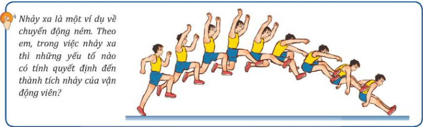
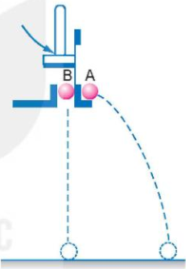
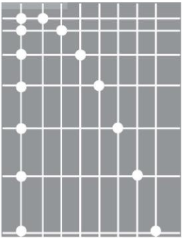
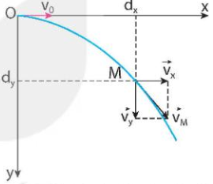
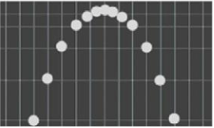
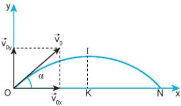

Ngày soạn: ....../....../20......
Môn: Vật lí 10 – Bộ sách Kết nối tri thức với cuộc sống
Số tiết: 2 (Tiết 19, 20 theo PPCT)
| Bước thực hiện | Nội dung các bước |
|---|---|
|
HOẠT ĐỘNG 1: KHỞI ĐỘNG (5 phút) |
Mục tiêu: Tạo hứng thú, dẫn dắt học sinh vào bài mới. Nội dung: Học sinh quan sát hình ảnh và trả lời câu hỏi. Sản phẩm: Câu trả lời của học sinh. Tổ chức thực hiện:
 Hình ảnh minh họa: Nhảy xa |
|
HOẠT ĐỘNG 2: HÌNH THÀNH KIẾN THỨC (25 phút) |
Mục tiêu: Hình thành khái niệm chuyển động ném ngang, phân tích chuyển động và rút ra công thức. Nội dung: Tìm hiểu khái niệm, thí nghiệm, phân tích chuyển động ném ngang. Sản phẩm: Câu trả lời, kết quả thảo luận, công thức. Tổ chức thực hiện: 1. Khái niệm chuyển động ném ngang
2. Thí nghiệm
 Hình 12.1. Thí nghiệm về chuyển động ném ngang  Hình 12.2. Ảnh chụp hoạt nghiệm chuyển động của hai viên bi A và B 3. Phân tích kết quả thí nghiệm
 Hình 12.3. Phân tích chuyển động ném ngang |
|
HOẠT ĐỘNG 3: LUYỆN TẬP (10 phút) |
Mục tiêu: Vận dụng công thức để giải bài tập đơn giản. Nội dung: Giải bài tập ví dụ SGK. Sản phẩm: Lời giải của học sinh. Tổ chức thực hiện:
|
|
HOẠT ĐỘNG 4: VẬN DỤNG (5 phút) |
Mục tiêu: Vận dụng kiến thức vào thực tế. Nội dung: Trả lời câu hỏi vận dụng. Sản phẩm: Câu trả lời của học sinh. Tổ chức thực hiện:
|
| Bước thực hiện | Nội dung các bước |
|---|---|
|
HOẠT ĐỘNG 1: KHỞI ĐỘNG (5 phút) |
Mục tiêu: Tạo tình huống có vấn đề về chuyển động ném xiên. Nội dung: Quan sát hình ảnh và dự đoán. Sản phẩm: Câu trả lời của học sinh. Tổ chức thực hiện:
 Hình 12.6. Ảnh chụp hoạt nghiệm chuyển động ném xiên |
|
HOẠT ĐỘNG 2: HÌNH THÀNH KIẾN THỨC (25 phút) |
Mục tiêu: Hình thành khái niệm chuyển động ném xiên, phân tích và rút ra công thức tính tầm cao, tầm xa. Nội dung: Tìm hiểu chuyển động ném xiên, phân tích thành hai thành phần. Sản phẩm: Câu trả lời, kết quả thảo luận, công thức. Tổ chức thực hiện: 1. Khái niệm chuyển động ném xiên
2. Phân tích chuyển động ném xiên
 Hình 12.7. Phân tích chuyển động ném xiên |
|
HOẠT ĐỘNG 3: LUYỆN TẬP (10 phút) |
Mục tiêu: Vận dụng công thức để giải bài tập. Nội dung: Giải bài tập ví dụ SGK. Sản phẩm: Lời giải của học sinh. Tổ chức thực hiện:
|
|
HOẠT ĐỘNG 4: VẬN DỤNG (5 phút) |
Mục tiêu: Vận dụng kiến thức vào thực tế và giao nhiệm vụ về nhà. Nội dung: Trả lời câu hỏi vận dụng, giao nhiệm vụ năng lực số. Sản phẩm: Câu trả lời của học sinh, sản phẩm infographic. Tổ chức thực hiện:
|
.................................................................................................................
.................................................................................................................
.................................................................................................................
Duyệt TCM
Lục Tuyến